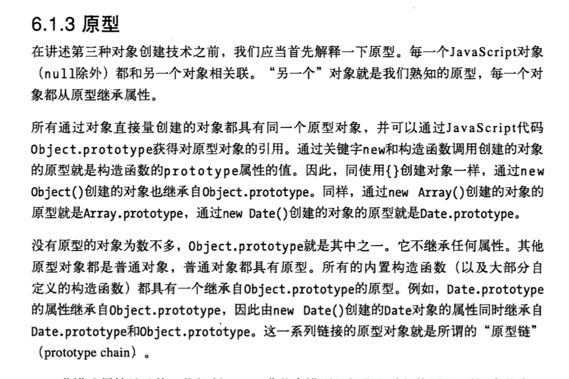

3 obj1.func.call(obj)方法 意思是将obj看成obj1,调用func方法
prototype是什么含义？ javascript中的每个对象都有prototype属性，Javascript中对象的prototype属性的解释是：返回对象类型原型的引用。 A.prototype = new B(); 理解prototype不应把它和继承混淆。A的prototype为B的一个实例，
A能使用B的方法和属性。这里强调的是克隆而不是继承。可以出现这种情况：A的prototype是B的实例，同时B的prototype也是A的实例。